2025년 7월, 경북의 한 고추밭.
그늘조차 없는 노지에서 장시간 일하던 태국 출신의 60대 노동자 A씨가 열성 쇼크로 쓰러졌습니다. 응급실로 이송된 그는 언어 기능에 심각한 후유증을 얻었습니다.
이 사건은 정부의 온열질환 통계에 집계되지 않았습니다.
오직 저희 '헷사과' 팀이 현장에서 직접 만난 이주노동자단체의 증언과 극소수의 기사를 통해서만 들을 수 있었던 '공론화되지 않은 사고'입니다.
이처럼 이주노동자들의 고통은 '죽음'에 이르러서야 비로소 언론에 짧게 다뤄질 뿐, 철저히 소외되어 있습니다. 더욱 심각한 것은 이들을 사지로 내모는 폭염이 해마다 기세를 더하고 있다는 점입니다.
갈수록 뜨거워지는 여름, 폭염은 이제 재난이 되었습니다.
기상청에 따르면 근 10년간의 폭염일수는 꾸준히 증가하고 있으며, 평균 최저기온 역시 상승 패턴이 계속됩니다. 2026년은 5월부터 이례적인 더위가 시작된 탓에, 역대 연중 가장 이른 시점에 온열질환 사망자가 발생하기도 했습니다. (출처: 질병관리청, 온열질환 응급실 감시체계)
살인적인 더위 아래, 이주노동자들은 속수무책입니다. 밭에서 쓰러지고 앓아누운 수많은 이주노동자들의 고통은 주목 받지 못한 채 조용히 처리되고 잊혀집니다.
하지만 아이러니하게도,
한국 농촌의 이주노동자 의존율은 60%를 웃돕니다
- 외국인을 고용하는 농가 64.3%
- 외국인을 고용하지 않는 농가 35.7%
이주노동자의 높은 비중
이는 농업 인력 구조에서 외국인 노동력이 필수적인 역할을 담당하고 있음을 보여준다.
출처 l 뉴스에듀
가혹한 날씨와 가장 열악한 노동 환경 속에서 묵묵히 일하는 이주노동자들이 없다면, 농촌은 단 하루도 돌아갈 수 없는 것이 현실입니다.
헷-사과 팀이 본 현장
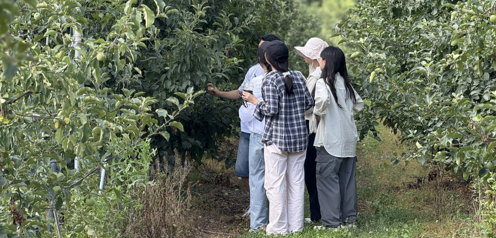
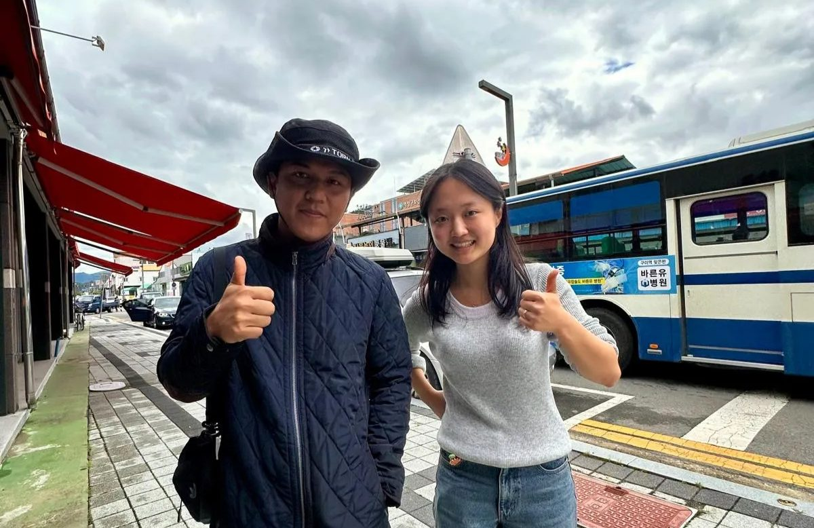
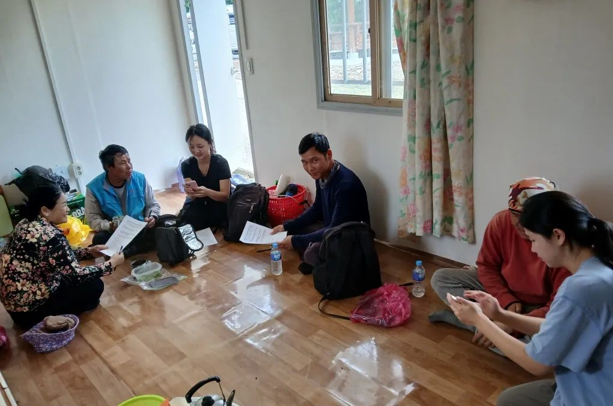
이주노동자의 온열질환 문제를 파헤치기 위해 ‘헷사과’ 팀은 경북 의성을 비롯한 농촌 현장으로 직접 향했습니다. 데스크리서치만으로는 찾을 수 있는 문헌연구와 통계수치가 전무했기 때문입니다. 이는 이주노동자 사망 후 부검 시, “사망원인이 된 작업 환경, 노동 강도, 폭염 노출 시간 등이 사인 판정에 충분히 반영되지 않기 때문에 온열질환 통계에도 집계되지 않는다”는 한 신문 보도 내용을 뒷받침하는 듯 했습니다.
그리하여 현장에서 수집한 실물 데이터를 통해, 그 숨겨진 위험의 규모를 낱낱이 보여드리고자 합니다.
1.1. 현장과 데이터
🗓️ 조사 시기: 2025년 8월 30일 ~ 2025년 9월 15일
👥 조사 대상: 이주노동자 31명, 관계자 15명
📍 조사 지역: 의성군 의성읍, 점곡면, 옥산면, 안동시 등
- 온열질환 경험자 13명
- 온열질환 미경험자 18명
헷사과 팀이 만나본 이주노동자는 31명,
그 중 13명이 온열질환을 경험했다
출처 l 이주 노동자 자체 설문조사 (n=31)
일하던 중 얼굴이 창백해지고 몸이 덜덜 떨렸어요
순간 정신을 잃지 않으려고 마시던 냉수를
머리에 들이 부으면서 버텼습니다
머리는 너무 어지럽고 눈앞이 흐린데 어떻게 해야 할지 모르겠어서 큰 수를 쓸 수 없었습니다
현장에서 마주한 현실은, 앞서 언급한 경북 고추밭 사례가 결코 '특수한 한 명의 이야기'가 아니라는 것이었습니다. 쓰러지거나 목숨을 잃기 전, 이미 수많은 이주노동자들이 매일같이 아찔한 온열질환 증상을 겪으며 위태롭게 버티고 있었습니다.
환경은 단연 열악했습니다. 체감온도는 40도를 훌쩍 넘고, 제대로 된 휴식공간도 없었을 뿐더러 그늘 한 점 찾기 어려웠습니다. 또한 해가 가장 뜨거운 1시경에도, 이주노동자들은 어김없이 작업을 이어가야만 했습니다.
1.2. 온열질환에 대한 농촌 구성원 인식
그렇다면 폭염 위험을 현장에서는 어떻게 느끼고 대처하고 있었을까요?
이주노동자를 보호하려는 작은 움직임이라도 찾아보고자, 여러 이해관계자들을 만났습니다.
“외국인들은 원래 우리보다 더위를 훨씬 잘 견딘다니까요?”
(의성군 옥산면 최00 농부)
“농사는 원래 여름에 하는 건데, 그렇게 따지면 애초에 농사를 어떻게 해요.”
(의성군 점곡면 김00 농부)
농장주들 사이에서는 이주노동자들이 '더위에 무감할 것'이라는 왜곡된 인식이 팽배했습니다. 이들의 출신 국가가 한국보다 더 덥다는 이유에서였습니다. 출신국과 상관없이 폭염 속에 온열질환 위험에 고스란히 노출되어 있었지만, 작업을 지시하는 농장주들은 위험의 심각성을 전혀 인지하지 못하고 있었습니다.
“복장이나 더위 대응까지 안내하는 건 현실적으로 잘 안 돼요.
사실 그런 건 기본 안내 항목에도 안 들어갑니다.”
(의성군 A인력업체)
“어느 현장으로 갈지도 매일 바뀌는데, 안전교육까지 하기 어려운 구조예요.”
(안동시 B인력업체)
중개 현장에서는 인력 배치와 작업 일정 조율이 최우선이었으며, 온열질환을 비롯한 안전 교육은 늘 후순위로 밀려나 있었습니다. 인력업체에 폭염은 작업을 멈춰야 하는 '위험 요인'이라기보다, 현장 관례상 감수해야 하는 '어쩔 수 없는 환경'으로 받아들여지고 있었습니다.
“작업 도중에 더워서 어지러웠던 적이 많아요. 그런데 병원에 간다거나, 하루치 일을 빼는 건 불가능해요.”
(인도네시아 국적 20대 남성)
“더워도 그냥 참고 일했어요. 쉬자고 먼저 말할 수 없거든요.”
(네팔 국적 30대 남성)
“중간에 쉬면 끝나는 시간이 늦어져서 더 힘들어요. 집이 머니까요.”
(베트남 국적 30대 여성)
정작 이상 증상을 느끼는 이주노동자들은 아무런 대처도 하지 못한 채 위험을 인내하고 있었습니다. 증상을 위험 신호로 인지하지 못하는 경우도 많았지만, 신분이나 고용 관계상의 취약함 때문에 스스로 작업을 중단하거나 휴식을 요구하는 것은 원천적으로 불가능한 구조였습니다.
이처럼 현장의 모든 주체가 폭염의 위험성을 제대로 인식하지 못하거나 묵인하는 상황 속에서,
이들을 선제적으로 보호해야 할 공공 기관 역시 무기력하기는 마찬가지였습니다.
“저희 측에서는 온열질환을 막기 위해 폭염이 심한 대낮에 영농 활동을 자제하라고 당부합니다. 드론 띄워서 뙤약볕 아래 일하는 농민들을 찾아 안전한 곳으로 대피시키기도 해요.”
“하지만 이주노동자들에게는 이런 조치가 가닿기 어려워요. 몇 달간 농가와 사적으로 맺은 계약 관계여서, 행정 기관의 적극적인 현장 개입에는 한계가 있기 때문입니다.”
“그분들도 덥겠죠, 분명 힘들텐데, 저희 입장에서는 해드릴 수 있는 게 없습니다.”
지자체의 경우 문제를 어렴풋이 인식은 하고 있었지만, 손을 쓸 수 없는 구조였습니다.
농장 사업주와의 근로계약 형태 문제, 그리고 이주노동자의 비자 문제 등으로 지자체에서는 '활동 자제 권유'라는 무기력한 지침만 반복할 뿐, 대부분의 농가는 "계약된 대로 영농을 해야 한다"며 폭염 속에서도 작업을 강행시키고 있었습니다.
지자체조차 개입할 수 없는 거대한 사각지대를 확인한 헷사과 팀은, 이주노동자들이 처한 '고용 구조의 특수성'을 근본적으로 파헤치기 위해 현장 심층 조사와 문헌 연구를 병행했습니다.
왜 그럴까? — 원인 분석
2.1. 이주노동자 유입 구조의 특수성
아래는 이주노동자들이 어떠한 경로로 농촌에 유입되는지, 비자와 체류 자격을 기준으로 분석한 [이주노동자의 농촌 유입 경로] 데이터입니다.
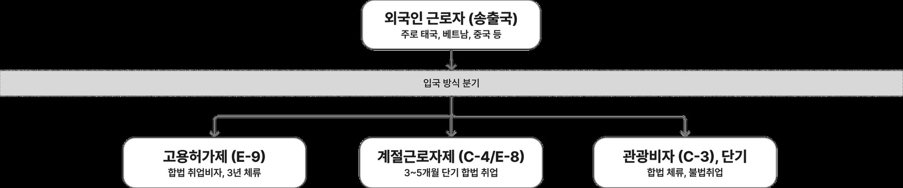
3년 체류가 가능한 합법 취업비자인 고용허가제 (E-9)
: 대부분 농가와 직계약 형태로 파견되거나, 고용센터 또는 인력업체를 경유해 합법적으로 농가에 배정
3~5개월 단기 합법 취업이 가능한 계절근로자제 (C-4/E-8)
: 농협 또는 지자체를 통해 본국에서 모집하며, 3-5개월 단기 비자로 합법 입국 및 취업
- 공공형 계절근로제: 농협이 직접 외국인 노동자의 생활 지원과 근로 관리, 인권 교육, 근무 기록 관리 등을 담당
체류는 합법이지만 취업은 불법인 관광비자 (C-3)
: 한국에 90일 미만 단기 체류를 위한 단기방문 비자로, 관광을 포함해 친지방문·행사참가·단기상용 등 비영리 목적에 폭넓게 사용
토글을 클릭 시 더 자세한 설명을 볼 수 있습니다.
그렇다면 이처럼 각기 다른 비자로 입국한 이주노동자들은 어떤 과정을 거쳐 농촌 현장에 투입될까요?
✔️ 체류자격별 경로
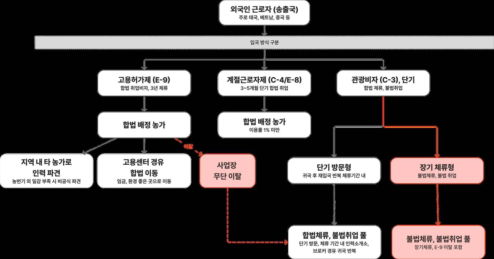
조사 결과에서 주목해야 할 점은, 합법과 불법이라는 초기 체류자격의 경계가 현장에서는 쉽게 무너진다는 사실입니다.
고용허가제 (E-9)
- 일부 노동자들이 농가에 불만을 품어 무단 이탈 후 사업장을 불법으로 변경 하는 경우
- 합법체류, 불법취업
- 체류기한인 3년이 지난 후 본국으로 돌아가지 않는 경우
- 불법체류, 불법취업
관광비자 (C-3)
- 관광비자로 입국해 체류기간 내 노동
- 합법체류, 불법취업
- 단기 입국 후, 체류자격을 상실한 이후에도 본국으로 돌아가지 않고 불법체류 신분으로 노동을 이어가는 경우
- 불법체류, 불법취업
이처럼 열악한 환경을 견디지 못해 '사업장을 무단 이탈'한 고용허가제(E-9) 인력과, 단기 입국 후 기한을 넘겨 체류 중인 관광비자(C-3) '장기 체류형' 인력 등 각기 다른 배경을 가진 노동자들이 현장에서 한데 섞이게 됩니다.
✔️ 현장에서 만난 이주노동자의 유입경로
| 사례 | 비자 및 체류기간 | 특징 |
|---|---|---|
| 인도네시아 20대 남성 노동자 3명 | 관광비자로 단기 입국 | 인도네시아 고향친구의 소개로 들어오게 됐고, 별로 친하지는 않지만 정보를 듣고 한국에서 돈을 벌기로 결심 |
| 베트남 남성 노동자 10여명 무리(연령대 다양) | 고용허가제로 장기 입국 후 기한 만료로 불법체류 | 본국 여러 산업에서 노동자 출신이며 농가체류형으로 농부가 제공해주는 숙소에서 숙박 |
| 캄보디아 여성 노동자 15여명 무리 | 계절근로자제로 단기 입국 | |
| 베트남 30대 남성 노동자 10여명 무리 | 관광비자로 단기 입국 |
앞서 파악한 유입 경로를 바탕으로 현장 인터뷰를 진행한 결과, 합법과 불법의 경계는 이미 무너져 있었고, 전혀 다른 비자로 입국한 이들이 한 밭에서 일하고 있었습니다.
결과적으로 이러한 구조적 맹점들이 겹겹이 누적되면서, 농촌 현장에는 거대한 '불법 체류 및 불법 취업 풀'이 고착화되어 있었습니다.
이 거대한 사각지대의 규모는 통계로도 명확히 드러납니다.
농촌 이주노동자의 80%가 공식 체류 자격이 없는 '미등록' 상태
한국농촌경제연구원에 따르면, 외국인 인력을 고용하는 채소·과수 등 작물재배 농가의 무려 91.9%, 축산농가의 44.2%가 미등록 이주노동자의 손에 의지하고 있습니다. 농번기면 이들을 고용하기 위해 농가 간 ‘쟁탈전’이 벌어지고, 농민들이 직접 단속 유예를 호소하는 것이 현실입니다. 이들이 온열질환으로 쓰러지면 우리 농촌과 식탁도 함께 멈춰 섭니다.
- 미등록 이주 노동자 80%
- 등록 이주 노동자 20%
높은 미등록 노동자 고용 비율
그래프에서 농촌 이주 노동자 80%가 공식적인 체류 자격이 없는 '미등록' 상태인 것으로 파악되었습니다.
30만명 넘어서다.
불법 취업하는 규모가 전년 대비 42.3% 폭증하며 30만 명을 넘어섰습니다.
2.2. 미등록 신분이 낳은 거대한 제도적 사각지대
서류조차 없는 '그림자 노동자'들의 침묵
사설 중개인을 통해 들어오는 단기 일용직이나 미등록 노동자들에게는 근로계약서 작성이라는 최소한의 안전장치조차 없습니다. 이들은 온열질환 증상이 나타나도 신분 노출이나 해고의 두려움 때문에 고통을 숨기다 결국 치명적인 사고를 맞이합니다.
통계에 잡히지 않는 '유령' 같은 죽음
미등록 이주노동자들은 단속과 강제 출국에 대한 두려움 때문에 온열질환이 발생해도 응급실 방문을 기피합니다. 심각한 사고나 사망조차 단순 지병으로 축소 처리되면서, 현장의 위험이 공식 통계에서 지워지고 결국 정부 정책에서 영구적으로 소외되는 악순환이 반복됩니다.
의료 사각지대와 책임 전가
: 아파도 병원에 갈 수 없는 이유
제도권 밖에 놓인 이들은 아플 권리마저 박탈당합니다. 대다수의 농촌 이주노동자들은 제도적 미비로 인해 건강보험에서 배제되어 있습니다. 이로 인해 온열질환이나 산재가 발생하더라도 막대한 치료비를 오롯이 개인이 감당해야 합니다.
폭염 속 노동으로 건강이 악화된 한 이주노동자는 농장주의 치료비 자부담 요구로 인해 막대한 병원비를 견디지 못하고 결국 중도 귀국해야 했습니다. 고국(베트남)으로 돌아간 뒤 한국 입국 전 들어두었던 현지 보험사에 보험금을 청구해보았으나, '해외 노동 중 발생한 질환'이라는 이유로 거절당하며 국내외 어디에서도 구제받지 못하는 철저한 사각지대에 놓였습니다.
사정이 이렇다 보니, 불안정한 신분 탓에 병원조차 갈 수 없는 이들에게 '사후 치료' 중심의 접근은 현실적으로 불가능합니다.
2.3. 안전교육 현황 및 실태
사후 대처가 불가능하다면 남은 유일한 해결책은 '사전 예방'뿐입니다.
이에 현재 이주노동자를 대상으로 한 안전 교육이 어떻게 이루어지고 있는지 그 실태를 추적했습니다.
다음은 입국 비자 유형별 안전교육 현황을 정리한 도식으로, 비자 종류에 따라 교육 수준·내용 격차가 존재함을 확인할 수 있습니다.
입국 단계에서 이주노동자들은 어떤 안전 교육을 받게 될까❓
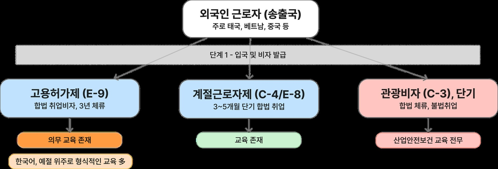
관광비자(C-3) 는 취업 자체가 불법이기 때문에 산업안전보건 교육 시스템과 제도적으로 연결될 여지가 없었습니다. 교육이 부족한 것이 아니라, 교육이 존재할 수 없는 구조였습니다.
고용허가제(E-9) 는 입국 전 45시간 이상의 사전 교육과 입국 직후 2박 3일의 공동 취업 교육이 의무화되어 있습니다. 제도만 보면 가장 체계적인 경로처럼 보이지만, 실제 현장에서는 이 교육이 제 기능을 하지 못하고 있는 현실입니다.
| 교육 단계 | 제도적 규정 | 현장 실태 |
|---|---|---|
| 입국 전 (송출국 사전 교육) | 45시간 이상 — 기초 한국어, 한국 문화, 산업 안전 기초 | 현장 실무 용어와 괴리가 커 투입 시 소통 불가. 형식적 이수에 그침 |
| 입국 직후 (공동 취업 교육) | 16시간 이상(2박 3일) — 산업안전보건, 근로기준법, 노동 권리 | 실효적 안전 교육보다 무단 이탈 방지를 위한 경고성 내용에 편중. 폭염 대비 실무 수칙은 전달 미흡 |
입국 전 교육은 현장 실무 용어와 크게 괴리되어 있고, 입국 직후 교육은 안전 안내보다 '무단 이탈 방지'를 위한 경고성 내용에 편중되어 있었습니다.
이처럼 제도는 존재하지만, 교육의 목적이 노동자 보호가 아닌 이탈 통제에 맞춰져 있다는 점을 확인할 수 있었습니다. 제도만 보면 가장 체계적인 경로처럼 보이지만, 실제 현장에서는 제 기능을 하지 못하고 있습니다.
입국 단계에서 실패한 안전 교육, 현장에서 그 빈틈을 채워줄 수 있을까❓
사전 교육이 무너졌다면 현장 단계에서라도 보완 교육이 이루어져야 하지만, 농촌 현장의 현실은 이마저도 허락하지 않습니다. 이는 단순히 농가 고용주들의 인식 부족 때문이 아닙니다. 현장 주도의 안전 교육 자체가 물리적으로 불가능한 거대한 '구조적 한계'가 자리 잡고 있기 때문입니다.
- 온열질환 관련 안내를 받지 못한 사람 63%
- 온열질환 관련 안내 받은 사람 37%
말이 잘 통하지 않으니 우리가 해주는 교육은 작업 방법 정도만 몸으로 보여주는 수준이에요. 10분 정도 따라 하면 끝이고 안전 교육은 따로 제공하지 않습니다
의성군 옥산면 김정미 사과농부
인터뷰와 통계를 종합하면, 상당수의 이주노동자들이 온열질환의 위험에 노출되어 있음에도 관련 안전 교육과 예방 안내를 충분히 받지 못하고 있음을 알 수 있습니다.
그렇다면 왜 현장에서조차 최소한의 안전 교육이 이루어지지 못하는 것일까요?
단순히 개별 농가 고용주의 무관심만이 원인은 아닙니다. 농촌 노동 시장 특유의 급박하고 열악한 현실이 교육 자체를 불가능하게 만드는 '세 가지 구조적 장벽'이 근본적으로 존재했습니다.
당일 투입 인력의 극심한 불확실성
농촌 인력 시장의 특성상 당일 어떤 국적의 노동자가 올지 알 수 없어, 현장 맞춤형 안전 교육을 설계하는 것이 원천적으로 불가능합니다.
시간이 곧 생산성 손실인 단기 고용 구조
하루·시간 단위로 움직이는 농작업 특성상, 1분 1초가 아쉬운 수확기에 교육을 위해 작업을 멈추는 것은 직접적인 생산성 손실과 비용 부담을 의미합니다.
기본적인 소통조차 막아서는 언어의 차이
농장주와 이주노동자 간의 소통을 매개할 인력이 없어, "더우면 쉬라"는 가장 기본적인 안전 수칙조차 언어 장벽에 가로막혀 제대로 전달되지 못합니다.
결국, 벼랑 끝에 몰린 이주노동자들을 지켜줄 최소한의 안전망인 '교육'은 제도의 공백과 농촌의 가혹한 고용 구조 속에서 완전히 증발해 있었습니다.
2.4. 건설업과의 비교
이러한 한계는 같은 미등록 이주노동자의 비중이 큰 건설업과 비교하면 확연해집니다. 현재 농업 분야의 온열질환 안전망이 어느 수준에 머물러 있는지, 법적 근거와 현장 실행 데이터를 대조해 보았습니다.
✔️ [제도] 정책 및 관리 체계
가장 먼저 두 산업을 규율하는 정책 및 관리 체계에서 명확한 차이가 나타납니다. 건설업은 노동자 보호 조치가 법적 의무로 명시되어 있는 반면, 농촌은 권고 수준의 지침에 의존하고 있습니다.
| 항목 | 🏗️ 건설업 | 🧑🌾 농촌 |
|---|---|---|
| 법적 근거 | 산업안전보건기준 개정 (2025.7.17 시행) — 법적 의무 | 2025년 여름철 자연재난종합대책 — 권고 수준 |
| 안전지침 | 온·습도계 기록, 자율점검표, 불시 점검 및 교육. 위반 시 처벌 | 예방 가이드 및 자율점검표 배포. 5인 미만 영세농가 적용 제외 |
| ➡️ 법적 의무 및 위반 시 처벌 | ➡️ 권고 수준에서 그침 |
✔️ [실행] 현장 대응 및 작업 환경 관리
제도의 격차는 실제 뙤약볕 아래의 노동 환경을 양극화시킵니다. 법적 의무에 따라 체계적으로 통제되는 건설 현장과 달리, 농촌의 시계는 폭염 경보 속에서도 멈추지 못합니다.
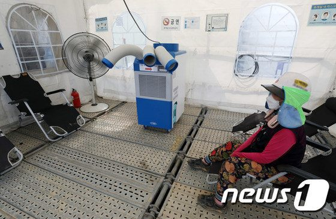
냉방·환기 설비를 갖춘 시원한 그늘막 또는 별도 휴게공간 설치 의무화

나무 그늘 등 간이 휴식에 의존
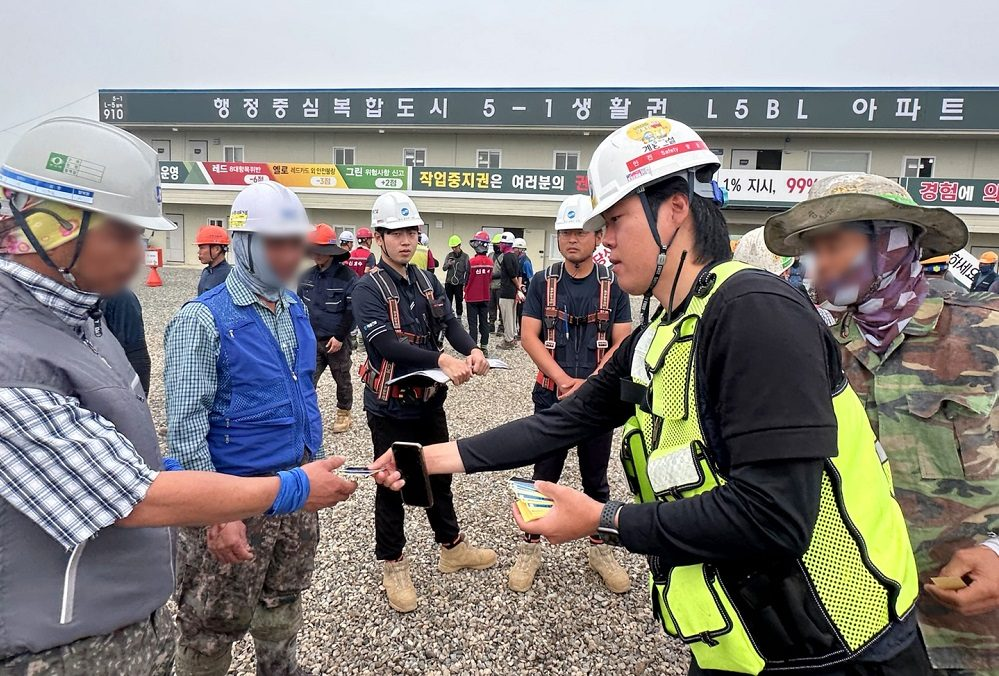
- 쿨조끼, 안전모 통풍 내피 등 표준 장구 지급
- 소규모 현장 온열질환 예방세트 지원
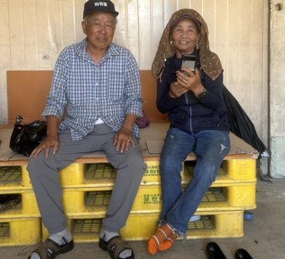
- 명확한 작업복이나 보호구 표준 부재
- 권고 수준의 안전 관리 요령 제공
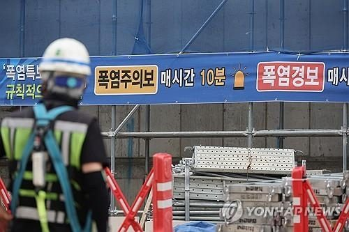
- 체감온도 33℃ 이상 → 2시간마다 20분 이상 휴식 의무
- 오후 2~5시 옥외 작업 최소화
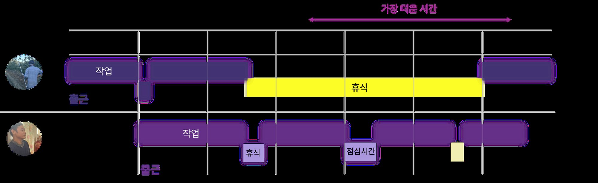
- 오전 10시 이후 야외작업 자제 권고
- 그러나 수확 시기·날씨에 종속되어 사실상 조정 불가
결과적으로 건설업과의 대조를 통해 확인한 사실은, 폭염에 대응하는 안전 관리 체계가 산업군의 특성에 따라 뚜렷한 격차를 보인다는 점입니다.
공사 기한을 어느 정도 조율할 수 있는 건설업과 달리, 농업은 작물의 생육 주기와 날씨에 전적으로 종속되어 있어 폭염 속에서도 작업을 강행해야 하는 산업적 특성을 지닙니다. 그러나 이러한 특수한 위험을 통제할 법적 강제성은 부재하며, 농촌 현장의 다수를 차지하는 5인 미만 영세 농가는 국가의 기본 안전 관리망에서조차 제외되어 있습니다.
이러한 '산업적 특성'과 '제도적 공백'이 맞물리면서, 가장 취약한 지위에 놓인 이주노동자들이 최소한의 보호장치도 없이 치명적인 기후 재난을 홀로 감당하고 있는 실정입니다.
최종 문제정의
지금까지 살펴본 바와 같이, 농촌 이주노동자의 온열질환 문제는 최소한의 시스템이 전 단계에 걸쳐 총체적으로 붕괴되어 있는 구조적 재난입니다.
결론적으로 '헷사과'가 마주한 문제의 본질은 이렇습니다.
농촌 이주노동자는 사전 예방, 현장 대응, 사후 관리에 이르는 구조적 공백으로 인해,
폭염이라는 기후 위기 앞에 최소한의 안전망도 없이 방치되는 '다중적 사각지대'에 놓여 있습니다.
굳게 닫힌 법적 잣대와 의료 시스템이라는 거대한 벽을 하루아침에 허물 수는 없습니다. 그렇다면 이 겹겹이 둘러싸인 다중적 사각지대 속에서, 뙤약볕 아래 무방비하게 노출된 이들을 살리기 위해 지금 당장 현장에 쥐여줄 수 있는 가장 시급하고 현실적인 방패는 무엇일까요?
헷사과는 그 해답을 노동자의 체온 조절과 직결되는 ‘복장 표준을 갖추는 것'에서 찾았습니다.
아무런 공적 보호도 받지 못하는 현장에서 이들이 찜통더위를 버티기 위해 유일하게 의존할 수 있는 생명줄은 오직 본인이 걸치고 있는 옷뿐입니다. 하지만 명확한 복장 기준이 없다 보니, 잘못된 복장 선택으로 오히려 온열질환 위험을 가중시키고 있었습니다.
거대한 제도의 공백을 단숨에 메울 수 없다면, 이 가혹한 복장 환경부터 실효성 있게 바꾸는 것. 이것이야말로 벼랑 끝에 몰린 이주노동자들의 생명을 당장 현장에서 지켜낼 수 있는 가장 확실하고 즉각적인 해결의 시작점입니다.
헷사과의 솔루션, ‘온열질환 안심키트’
“폭염 속 농업 현장에 필요한 생존 장비의 표준을 만들다.”
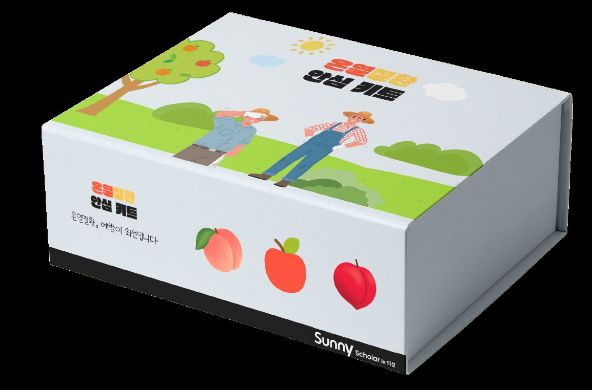
어떠한 솔루션이 현장에서 작동하는 하나의 '표준'으로 정립되기 위해 필요한 지점을 고민해보았습니다.
온열질환 예방과 올바른 복장 지식 전파를 위해서는 다음과 같은 세 가지 조건이 충족되어야 한다고 생각했습니다.
폭염을 이겨낼 확실한 기능성,
누구나 부담 없이 이용할 수 있는 높은 접근성,
그리고 긴 설명 없이도 바로 이해되는 직관성입니다.
헷사과는 가혹한 농촌 환경에 가장 필요한 물품들을 이 세 가지 기준에 맞춰 선별했습니다. 그리고 이주노동자가 일터에 도착한 즉시 고민 없이 완벽한 복장을 착용할 수 있도록, 분산되어 있던 필수 보호물품들을 하나의 패키지로 결합해 '안심키트'를 완성했습니다.
즉, 농촌 현장 이주노동자들의 폭염 피해를 예방하기 위한 보호물품 세트입니다.
4.1. 안심키트 도입의 목표
온열질환 안심키트는 이주노동자들이 온열질환에 걸릴 수 밖에 없는 구조적 병목과 한계를 해결하기 위해 고안된 “사전 예방형 생존 장비 세트” 입니다.
- 농업 현장에서 실제 필요한 보호용품을 모아 제공하고,
- 다국어 리플렛을 통해 올바른 사용법과 예방 지식을 전달함으로써 폭염으로 인한 사고를 최소화합니다.
농촌 이주노동자의 생명과 안전을 지키는 현실적 수단이 됩니다.
4.2. 안심키트의 구성
4.2.1. 키트 구성품
철저한 데스크리서치와 농촌 현장에서 만난 이주노동자들의 생생한 증언을 바탕으로, 가장 직관적이면서도 생명과 직결되는 4가지 필수 보호물품을 엄선했습니다. 위험에 대한 고려 없이 관성적으로 선택하던 잘못된 복장을, 현장에서 즉각 교정할 수 있는 최선의 조합입니다. 아래를 통해 선정 목적과 효과성을 자세히 보실 수 있습니다.
클릭하여 자세히 보기
4.2.2. 다국어 리플렛
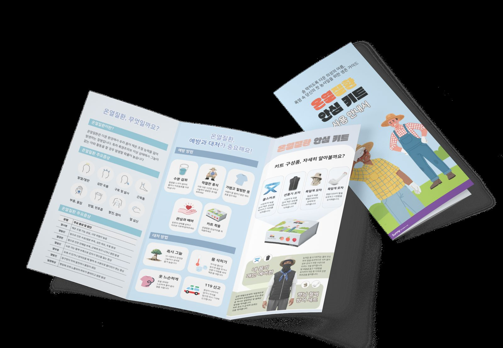
온열질환 안심 키트에는 총 10개 언어로 제작된 다국어 리플렛이 함께 포함되어 있습니다.
한국어 숙련도가 낮은 이주노동자가 온열질환에 대한 핵심 정보를 쉽고 정확하게 이해할 수 있도록 설계한 것인데요. 실제 농촌 현장의 이주노동자들은 언어 장벽으로 인해 안전교육 내용이나 보호장비 사용법을 제대로 파악하지 못하는 경우가 많고, 이는 온열질환 대응의 중요한 격차로 이어지기 때문입니다.
다국어 리플렛은 이러한 정보 접근성의 차이를 최소화하고, 노동자가 스스로 위험을 인지하고 대응할 수 있도록 돕기 위해 고안되었습니다.
4.3. 온열질환 안심키트의 의의
지금까지 농업 분야에는 폭염 대비 가이드라인이나 표준이 부재했습니다. 키트는 단순한 물품이 아니라 ‘농촌 버전의 기본 안전 기준’을 만드는 첫 시도 라는 점에서 의미가 큽니다.
‘위험이 발생한 후 대응’이 아니라 ‘미리 대비하는 문화’로 전환시키는 중요한 출발점이 됩니다.
온열질환이 통계에도 잡히지 않는 상황에서, 키트의 배포와 사용은 현장의 문제를 사회적으로 드러내는 증거가 될 수 있습니다. 즉, 정책 변화의 근거가 되는 ‘문제의 존재를 보여주는 첫 공식 시도’입니다.
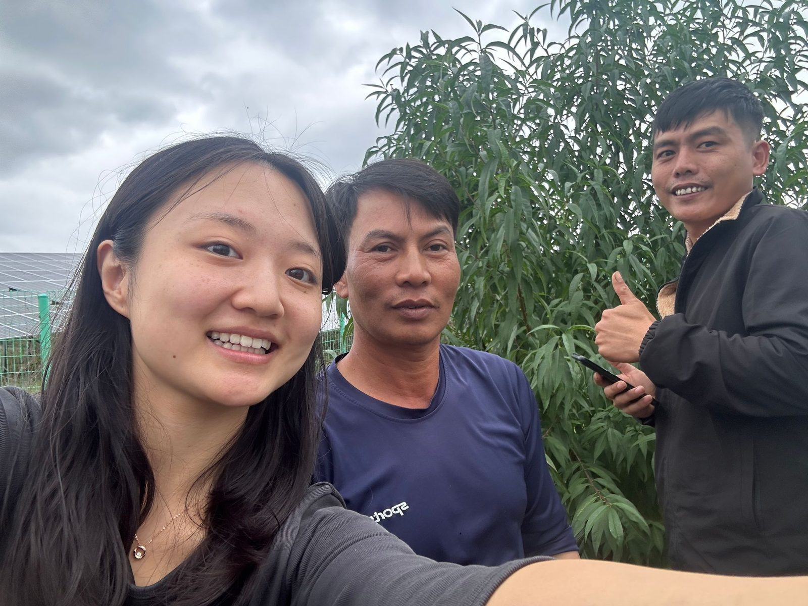
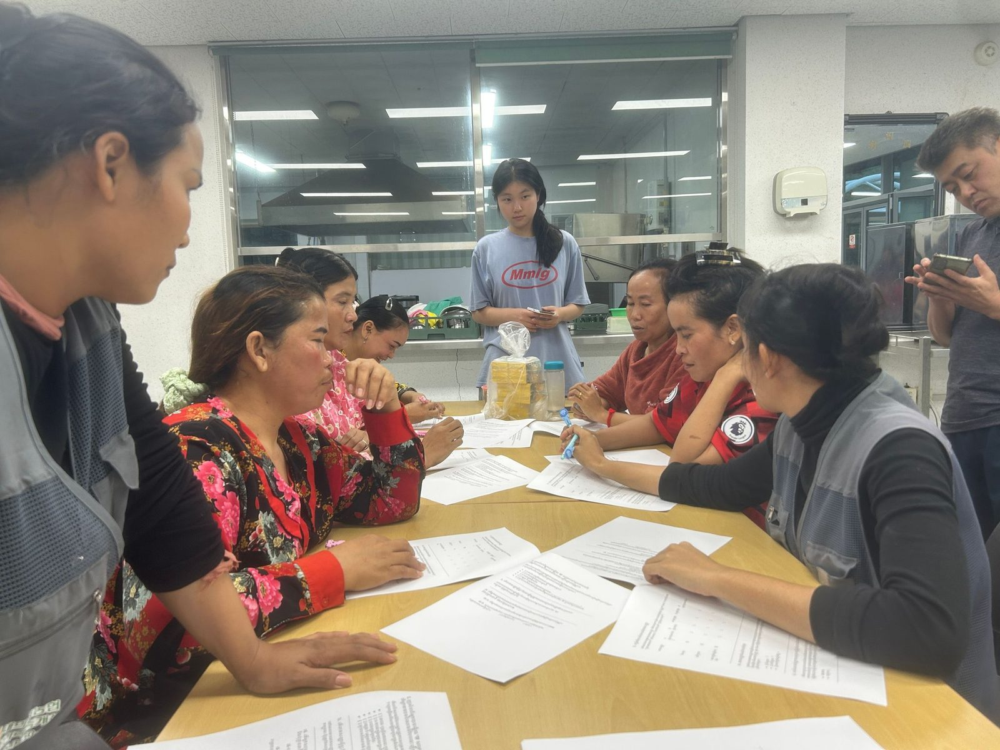
한국 농촌의 여름 폭염은 매년 반복되지만, 이주노동자들은 기본적인 장비와 정보 없이 첫날부터 뜨거운 밭에 그대로 노출됩니다. 언어 장벽으로 안전교육을 이해하기 어렵고, 우리 농업의 핵심 노동력임에도 가장 기본적인 보호조차 받지 못합니다.
온열질환 안심키트는 이 현실을 바꾸기 위한 첫걸음입니다. 온열질환은 치명적이지만, 대비는 어렵지 않습니다. 누구든 출신과 언어와 관계없이 같은 수준의 안전을 보장받아야 합니다. 온열질환 안심키트는 그 당연한 기준을 만드는 출발점이 되어줄 것입니다.

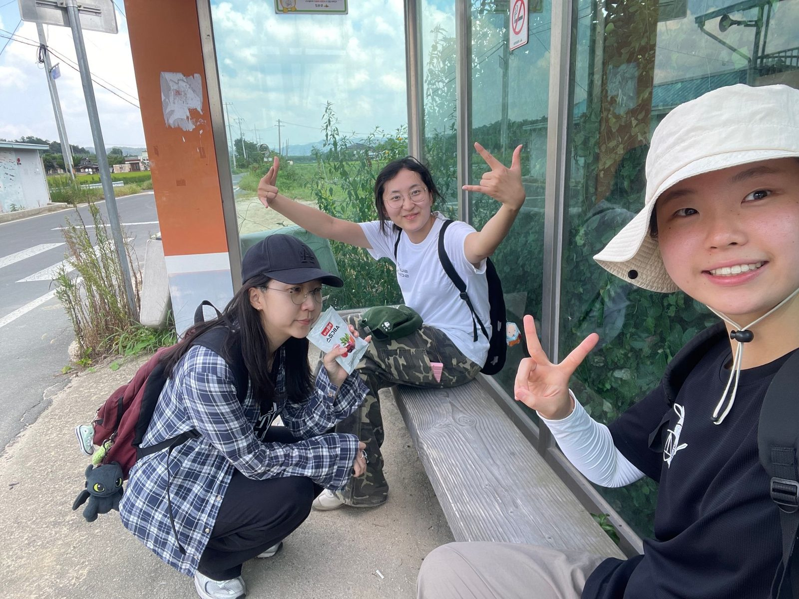
문제의 확장: 임팩트 캔버스로 보는 변화
농촌 초기진입 이주노동자가 겪는 온열질환 문제를 주목함으로써,
우리 사회에 어떤 영향을 끼칠까요?
숨겨진 고통이 어떻게 사회적 변화의 기반이 될 수 있는지 임팩트 캔버스를 통해 살펴봅니다.
- 11단계
수면 위로 떠오른 목소리들
다중적 사각지대의 조명사회의 변두리, 농촌이라는 공간에서 묵묵히 일하며 살아가지만, 온열질환과 같은 심각한 위험에 노출된 이주노동자들의 현실을 '수면 위로 드러내는' 것에서 시작합니다. 이주노동자가 맞닥뜨리는 안전하지 않은 노동 환경에서 온열질환이 치명적인 위협이 되는 현실을 인식합니다.
- 22단계
공론화로 선명해지는 현실
문제 해상도의 고도화농촌 이주노동자의 어려움에 대한 막연한 인식을 넘어, 열악한 작업 환경, 휴게 시간 부족, 의료 접근성 한계 등 구체적인 현실을 세밀하게 이해할 수 있을 것입니다. 나아가 제도적 보호망의 미비로 인해 그들이 어떻게 더 큰 위험에 노출되는지를 드러냄으로써, 문제의 해상도를 높입니다.
- 33단계
경계를 넘어선 확장과 연대
사회적 책임의 발견선명해진 문제 인식은 '문제의 확장'으로 이어집니다. 농촌 현장에서 일하고 있던 이주노동자들, 나아가 폭염에 취약한 모든 노동자들에게 공통적으로 적용될 수 있는 구조적 결함임을 인지하게 됩니다. 특정 집단의 고통이 아닌, 이주노동자라는 계층의 문제 해결이 우리 사회 전체가 책임져야 할 공동의 문제를 인식합니다.
- 44단계
지속 가능한 변화를 위한 초석
시스템 개선의 기반 구축농촌 이주노동자의 문제 조명에서 시작하여, 사회적 공론화로 문제의 해상도를 높이고, 궁극적으로 모든 이주노동자 및 관련 분야로 문제 인식을 확장하는 과정을 통해 실질적인 변화를 위한 기반을 마련합니다. 지원 체계, 인식 개선과 교육, 그리고 노동 환경의 개선을 이끌고, 특히 보호받지 못하는 농촌 이주노동자에 대한 사회적 보호망을 강화하는 지속 가능한 사회를 향한 한 걸음이 될 것입니다.
5.1. 지속 가능한 해결을 위한 관점
이처럼 하나의 작은 임팩트는 사회의 커다란 물결을 가져올 수 있습니다.
이때 농촌 이주노동자의 온열질환 문제를 단순한 개인의 부주의가 아닌,
사회적 무관심과 미비한 시스템이 만들어낸 복합적인 결과로 바라봐야 합니다.
문제의 지속적인 해결을 위해 필요한 네 가지 관점을 제시합니다.
클릭하여 확인해보세요!
연구 여정의 마무리
2025년 6월부터 11월, 숨겨진 문제를 발견하고 정의하는 과정
2025년 여름날, SK행복나눔재단의 [Sunny On-Site 1기] 프로젝트로 모인
네 명의 대학생, 헷사과 팀.
농촌 이주노동자가 겪는 온열질환 문제를 수면 위로 드러내는 것을 목표로 삼고 연구를 진행했습니다.
“이주노동자 문제는 팔, 다리가 잘려야만 뉴스에 나와요.”
지나가듯 들은 경북북부이주노동자센터 소장님의 한 마디에, 헷사과는 문제의 심각성과 더 깊은 연구의 필요성을 깨달았습니다. 그 의미를 찾기 위해 헷사과는 농촌 곳곳에서 어려움을 겪고 있지만, 세상에는 드러나지 않은 채 묵묵히 자리를 지키는 농촌 이주노동자의 목소리에 귀기울이기 위해 노력했습니다. 무더운 여름부터 조금 선선해진 가을까지, 의성 농업 현장을 발로 뛰며 해결이 필요한 문제를 지니고 있는, 사각지대의 이주노동자를 발견할 수 있었는데요. 헷사과는 문제 당사자부터 그들의 동료, 고용 농장주, 이주민 지원 기관 및 센터, 인력업체, 의성군청 등 다양한 이해관계자들을 만나 현장의 이야기를 생생하게 들었습니다.
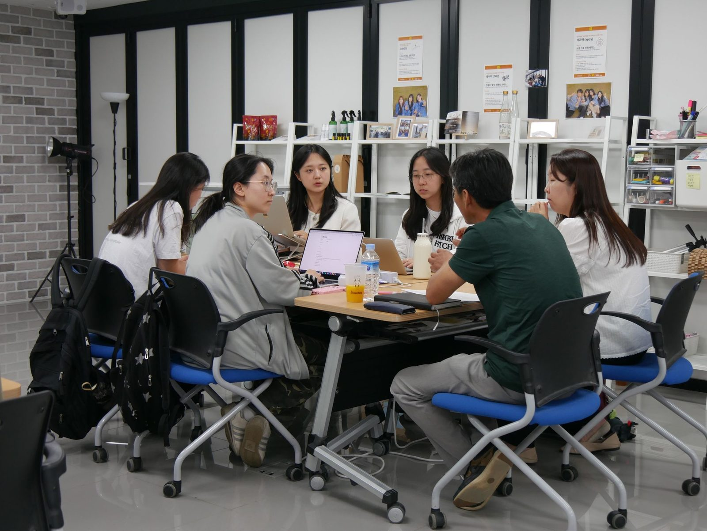
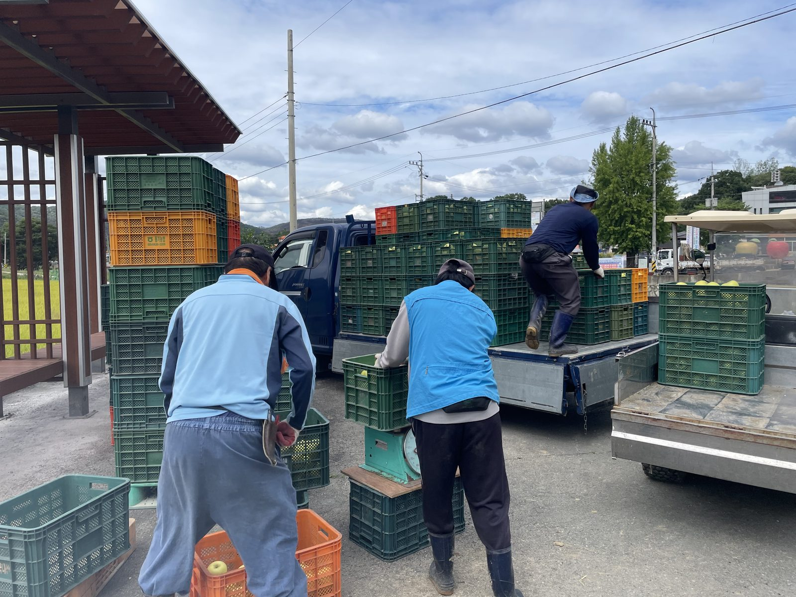
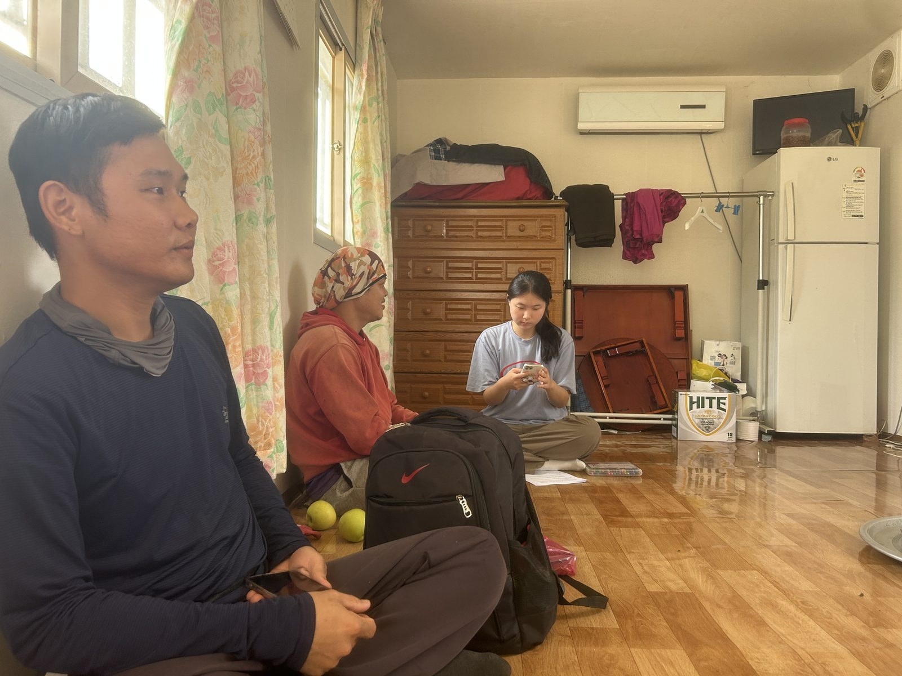
의성 현장에서 만난 이주노동자들은 온열질환을 자주 겪고 있었지만, 누구도 그들을 도와주지 않는 현실 앞에 놓여있었습니다. 이주노동자의 생생한 목소리를 듣고 삶의 현장을 가까이서 관찰하며, 그들의 온열질환 문제가 단순한 건강 문제를 넘어 구조적 사각지대에 놓인 이들의 숨겨진 고통임을 알게 되었습니다.
헷사과의 농촌 이주노동자의 온열질환 문제 연구가 단순한 문제 정의에 머무르지 않고, 사회적 관심과 변화를 이끄는 작은 첫걸음이 되기를 바랍니다.
이 연구를 통해, 함께 살아가지만 소외된 곳에 있는 이들에게 온기가 닿기를 희망합니다.